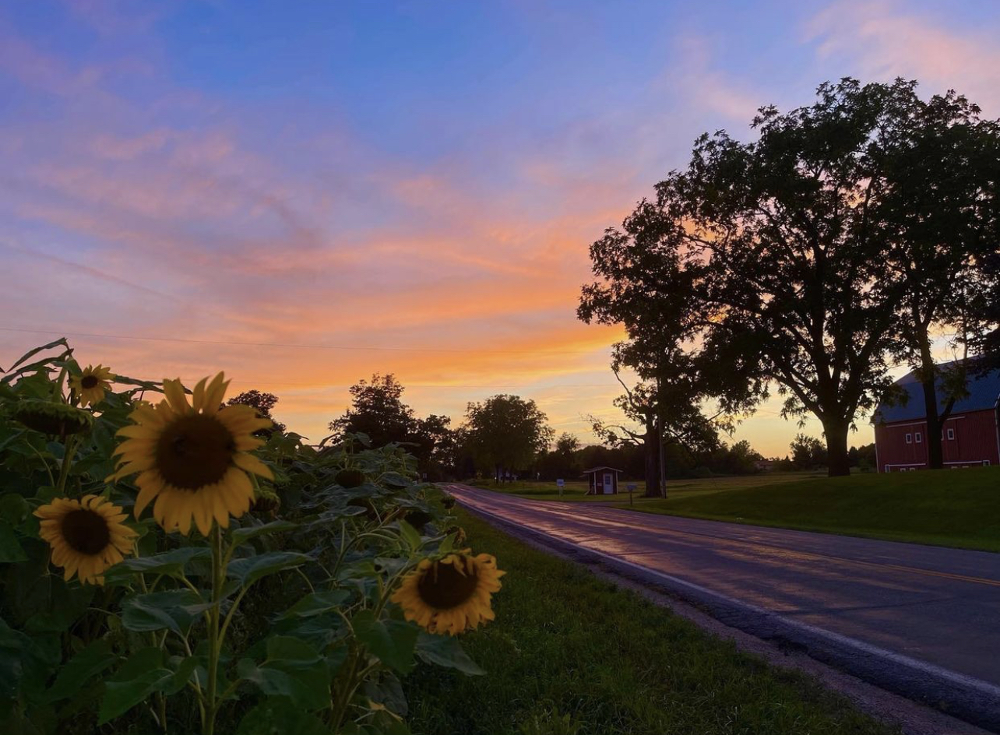
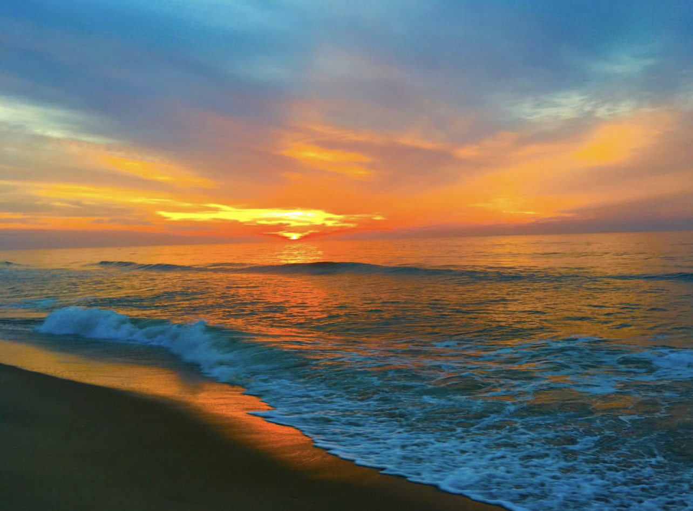

Blog 1 - Why Sunsets Bring Peace
October 20th, 2021 by: Ariana Parker
Sunsets are not only the end to a day, but they are symbols of peace,
harmony, and the promise of renewal. I love watching sunsets because
they brighten my mood, and they help me relax and reset after a rough day.
Sunsets show me that even if my day was bad, it can still end beautifully
and bring me peace. I think peace is very important especially with how the
world is right now, watching a sunset and just calming the mind for five to ten minutes
can be very beneficial to those who are very stressed.
I live by the River Trail, and I have been seeing more and more people out during
sunset hour and it makes me happy to see others putting themselves first.
This is a sunset I caught the night before a test I was really stressed out about and
I saw there for about twenty minutes reading, watching, and calming the mind.
The next day when I finished the test it was the best grade I had received on a test
for this class, and I feel that it was from watching the sunset and relaxing my mind
the night before. So many benefits!

| Date | Thought | Mood |
|---|---|---|
| 2021 | A step in the right direction | Happiness |
| 2021 | Finding peace | Grateful |
Blog 2 - Sunrises Are Special
October 20th, 2021 by: Ariana Parker
The first time I woke up early to catch a sunrise was in 2016.
I was in Ocean City, Maryland and was staying by the beach. I set
about three alarms and woke up at 5:30am, got ready, and headed down
to the beach. While I waited for the sun to start rising, I wrote in
my journal about the morning so far and how I was feeling. I also played
music and read.
When the sun started to come up, I took some pictures and
then recorded a time lapse the rest of the time. It was the prettiest
sunrise I had ever seen and since that day I made sure to wake up every
day to watch the sunrises.
I realized that they made my days a lot better, made me feel very productive,
and happy! Sunrises also symbolize not only the start of the day but a new
beginning. I think both sunrises and sunsets give us a better sense of gratitude
for the earth which is always very important. Being caught up in the natural
beauty of the earth. I love the high levels of satisfaction and gratitude for
what is happening right in front of me!
